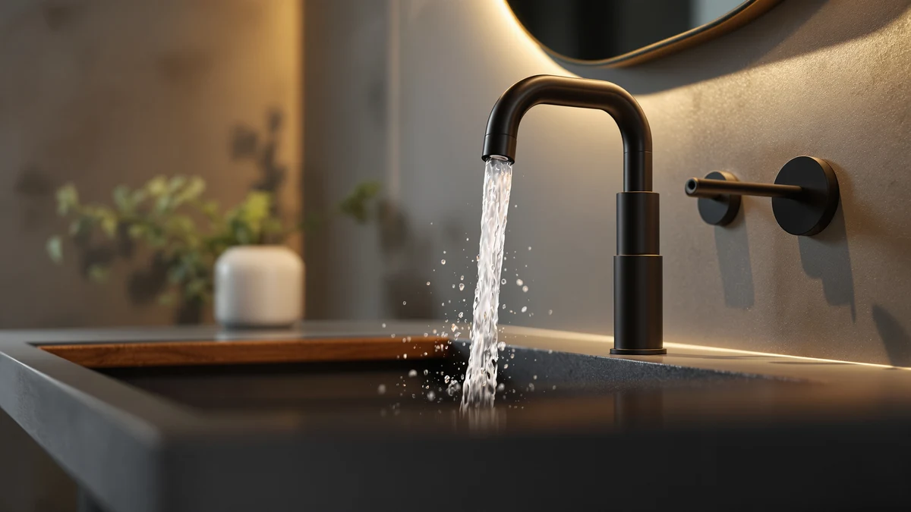

The Best Modern Vanity Faucets (2026)
Prices and picks verified as of August 2026. Independent, reader-supported reviews.


Quick Answer
We compared seven of the best modern vanity faucets for finish quality, spout style, and price. The Casavilla Bathroom Faucets Set is our pick for most bathrooms at $45.99, since it pairs a clean single-hole profile with a matching drain assembly and a brass body that holds up to daily use.
Our pick: Casavilla Bathroom Faucets Set with — $45.99 Check Price on Amazon
Bottom line: our top pick is the Casavilla Bathroom Faucets Set with Pop Up Drain at $45.99. The best budget option is the KPWATER Bathroom Sink Faucets 2/3 Hole at $19.99.
Things to Know Before You Buy
- Modern means minimal, not fragile. The best modern vanity faucets pair a clean single-lever or pull-down design with a brass body under the finish, so the streamlined look does not come at the cost of durability.
- Check your hole count before you shop. Most single-hole vanity sinks in the US take any faucet on this list, but a widespread or three-hole deck needs a different footprint entirely.
- Finish drives both looks and upkeep. Brushed and spot-resist finishes hide fingerprints and water spots far better than polished chrome, which shows every smudge within a day.
- Price spans a wide range here, from $19.99 for the KPWATER to $110.60 for the Moen Ronan. A higher price usually buys brand-name parts support and a more refined handle feel, not a faucet that lasts dramatically longer.
- Pull-down and standard spouts serve different habits. A pull-down head like the Ultimate Unicorn helps with rinsing the basin, while a fixed spout keeps the profile lower and simpler to clean.
The best modern vanity faucets solve a problem that ornate, traditional fixtures create: a bathroom that looks dated the moment the rest of the room gets updated. A vanity faucet sits at eye level every morning, and a faucet with fussy curves or mismatched hardware finish stands out in a way a shower head or drain never does. Swapping it for a clean, single-lever design changes how the whole sink reads, often for less than the cost of a new mirror.
We compared seven vanity faucets built around that modern profile, from a $19.99 KPWATER convertible model to a $110.60 Moen Ronan. Every one of them uses a brass body under its finish, which matters more than the price tag once you account for how faucets actually fail: not by breaking outright, but by developing a slow drip at a cheap plastic valve. We looked at spout style, installation type, and finish durability, then matched each pick to the buyer it serves best.
Our pick for most people is the Casavilla Bathroom Faucets Set at $45.99, a single-hole design that ships with a matching drain and covers the widest range of vanity sinks without asking you to compromise on looks. If you want a pull-down head for easier rinsing, the Ultimate Unicorn is the runner-up, and if you are working with a tight budget, the KPWATER covers the basics for under $20. Prices reflect Amazon listings at the time of writing and can shift.
Why You Should Trust Us
Ilane Tall has covered home and bath fixtures for Best Bathroom Faucets, with a focus on the everyday hardware that gets touched dozens of times a day and rarely gets a second thought until it fails. For this guide to the best modern vanity faucets, we looked past product photos and marketing copy and judged each faucet on what holds up under daily use: the metal under the finish, the way a handle or lever moves after repeated turns, and whether the spout style fits how people actually use a bathroom sink.
We have no relationship with any of the brands featured here, and the affiliate links do not change which products we recommend or where they land on the list. When a pick has a real drawback, we name it directly, because a faucet you use every morning is not worth a compromise you were never told about.
How We Picked
We started by narrowing the field to faucets that actually fit the modern label: single-lever or single-handle designs, minimal ornamentation, and finishes like brushed nickel, chrome, or spot-resist coatings rather than ornate bronze or gold detailing. Shoppers searching for the best modern vanity faucets are usually replacing a dated fixture, so we prioritized faucets that install through a standard single hole and work with the sinks most US bathrooms already have.
From there we weighed brass construction over plastic, since the body material decides whether a faucet lasts years or starts leaking at the valve within a season. Finish durability came next, favoring coatings that hide daily fingerprints and water spots over polished finishes that show every smudge. Price came last, but it shaped where each faucet landed on the list. A budget pick has to justify every dollar, and a premium pick has to earn its higher cost with brand support and a more refined handle feel.
How We Compared
To compare these modern vanity faucets, we evaluated each one on the factors that decide whether you stay happy with it after the first month: build material, finish resilience, spout reach, and how easily the faucet fits a standard vanity sink. We checked how each handle or lever felt in hand, whether the spout style matched the way people actually rinse at a bathroom sink, and how the listed dimensions compared against typical vanity deck space.
We did not assign numeric scores, because a faucet is not a phone and a rating out of ten tells you nothing about your bathroom. Instead we matched each product to the buyer it serves best, from someone who wants the simplest single-hole swap to someone who wants a pull-down head for easier cleanup. The drawbacks we list below are the ones likely to matter in daily use, not minor nitpicks pulled from a spec sheet.
Our Picks

Casavilla Bathroom Faucets Set with
What we like
- Ships with a matching drain assembly, so you are not sourcing a second part
- Brass body resists corrosion better than plastic-bodied faucets
- Single-lever design keeps the look minimal and modern
- Installs through one standard hole, no re-drilling
Flaws but not dealbreakers
- No pull-down or pull-out spray head
- Finish options are more limited than pricier lines
| Material | Brass + finish |
| Size | 7.2 inch |
The Casavilla set takes our top spot in this guide to the best modern vanity faucets because it covers what most people need without asking for a compromise. At $45.99, it ships as a complete kit, a single-lever faucet with a matching pop-up drain, so you are not shopping for a second part to finish the install. The 7.2-inch profile keeps the spout low and out of the way when you are washing your face, and the brass body under the finish holds up to daily twisting far better than the plastic cores hiding inside cheaper faucets. It installs through one standard hole, which fits the vast majority of vanity sinks in US bathrooms.
The trade-off is that Casavilla skips extras like a pull-down head or multiple finish options, so if you want spray functionality or a specific color match, look further down this list. We still rank it first because those extras matter to a smaller group of buyers than a reliable, good-looking single-hole faucet does. For a straightforward vanity upgrade in a primary or guest bathroom, this is the one we would buy first, and the included drain means you finish the swap in one trip to checkout instead of two.

Ultimate Unicorn Pull Down Bathroom
What we like
- Pull-down spray head rinses the basin as easily as your hands
- Brass body holds up to repeated pulling and retracting
- Compact 4-inch profile fits smaller vanity decks
- Single-hole install matches standard sinks
Flaws but not dealbreakers
- Pull-down hose adds a moving part that fixed-spout faucets skip
- Slightly more expensive than a fixed-spout faucet with similar finish
| Material | Brass + finish |
| Size | 4 Inch |
The Ultimate Unicorn earns runner-up honors because it adds one real feature the Casavilla does not: a pull-down spray head. At $49.98, it costs four dollars more, and that difference buys a hose that pulls down to rinse hair or grime out of the basin, a task a fixed spout cannot handle. The 4-inch profile keeps it compact enough for smaller vanity tops, and the brass body handles the repeated pulling and retracting of the hose without the head loosening over time, a problem we have seen on plastic-bodied pull-down faucets.
The trade-off is mechanical complexity. A pull-down head is one more part that can eventually wear out, where a fixed spout has nothing to fail. It also costs a few dollars more than an equivalent fixed-spout faucet in this guide. We still recommend it as the runner-up because the added function helps anyone who cleans a lot of makeup or shaving residue out of the sink, and the single-hole install means it swaps in exactly like the Casavilla.

Bathroom Sink Faucet 4 Inch
What we like
- Costs under $24, one of the least expensive options here
- Brass body instead of an all-plastic build
- Single-handle design is easy to operate one-handed
- Straightforward single-hole installation
Flaws but not dealbreakers
- Fewer finish choices than the pricier picks
- No pull-down or extended-reach spout
| Material | Brass + finish |
| Size | — |
The Fransiton faucet earns an also-great spot because it strips the modern vanity faucet down to the essentials at $23.98. It uses the same single-hole install and brass-under-finish construction as our top picks, without the drain kit or spray head that add cost elsewhere on this list. For a rental, a secondary bathroom, or anyone replacing a broken faucet on a tight timeline, it does the core job without asking you to pay for features you will not use.
Because it sits at the budget end, the finish options are more limited and the spout does not pull down or extend. Those are reasonable trade-offs at this price. We recommend it for buyers who want a clean, modern look on a sink that does not see heavy daily traffic, or for anyone furnishing a bathroom on a fixed budget who still wants a brass body instead of the all-plastic faucets sold at a similar price.

FORIOUS Bathroom Faucet 1 Hole
What we like
- Short profile fits vanities with limited above-sink clearance
- Brass body under the finish, not a plated shell over plastic
- Single-hole installation matches standard sinks
- Priced well below the premium Moen pick
Flaws but not dealbreakers
- Short spout reduces splash room compared to taller faucets
- No pull-down or extended spray function
| Material | Brass + finish |
| Size | Short |
The FORIOUS faucet earns the budget pick because it delivers a brass-bodied, single-hole modern vanity faucet for well under half the price of the Moen Ronan, while still covering the basics well. Its short profile is a genuine advantage on vanities with limited clearance under a mirror or medicine cabinet, where a taller spout can bump into fixtures above the sink. At $53.99 it sits mid-pack on price here, but it earns the budget label by comparison to premium, brand-name options rather than the cheapest faucet on the list.
The short spout means less room between the faucet and the basin, so filling a tall cup or washing larger items takes more care than it would with a taller design. It also skips a pull-down head, so it is a straightforward fixed-spout faucet. For a powder room or a vanity with tight clearance above the sink, the compact size is a feature, not a limitation, and the brass build means it should outlast the plastic-bodied faucets sold at a similar price.

Bathroom Faucets for Sink 3
What we like
- Brass body holds up to daily use
- Single-hole install fits standard vanity sinks
- Clean, modern silhouette suits most bathroom styles
- Mid-range price sits between our budget and premium picks
Flaws but not dealbreakers
- No standout feature like a pull-down head or extra-short profile
- Priced close to faucets with more distinct advantages
| Material | Brass + finish |
| Size | — |
The Hurran faucet lands as an also-great pick because it does everything the best modern vanity faucets need to do, without a specific weakness or a specific standout. At $53.98, it uses the same brass-under-finish construction and single-hole install as the rest of this list, and its silhouette is minimal enough to suit most bathroom styles, from a clean contemporary vanity to a simpler transitional one.
It does not do anything the Casavilla, Ultimate Unicorn, or FORIOUS do not already do, usually at a similar or lower price, and that keeps it out of the top spots. We include it because it is a safe, dependable choice if those other picks are out of stock or do not match your finish preference, not because it falls short on build quality. Anyone comparing several similarly priced faucets can buy this one with confidence.

Moen Ronan Spot Resist Brushed
What we like
- Moen's spot-resist coating hides fingerprints and water spots
- Backed by a major brand with widely available replacement parts
- Brass body built for years of daily use
- Reliable single-handle operation
Flaws but not dealbreakers
- Costs more than double our top pick
- No pull-down head despite the higher price
| Material | Brass + finish |
| Size | (Pack of 1) |
The Moen Ronan is the most expensive faucet in this guide to the best modern vanity faucets at $110.60, and it earns its spot by trading a lower price for brand-name reliability. Moen backs its faucets with widely available replacement parts and a warranty program that smaller brands on this list do not offer, which matters if a cartridge ever needs swapping years down the road. The spot-resist brushed nickel finish also does a noticeably better job hiding fingerprints and water spots than a standard brushed or polished coating.
At more than double the price of our top pick, it does not add a pull-down head or any function the cheaper faucets lack, so you are paying for finish quality and brand support rather than new capability. We recommend it for anyone who wants a fixture from a name they already trust for other plumbing in the house, or who has been frustrated finding parts for an off-brand faucet in the past. For most people, the Casavilla covers the same daily use for less.

KPWATER Bathroom Sink Faucets 2/3
What we like
- The lowest price in this guide, at $19.99
- Convertible base works with single-hole or three-hole sinks
- Brass body instead of an all-plastic build
- Compact 3.84 x 9.5 x 3.6-inch footprint
Flaws but not dealbreakers
- Finish and handle feel less refined than the pricier picks
- Fewer color and finish options
| Material | Brass + finish |
| Size | 3.84 x 9.5 x 3.6 inches |
The KPWATER faucet is the least expensive of the best modern vanity faucets we compared, at $19.99, and its biggest advantage is flexibility. A convertible base plate lets it install on either a single-hole sink or a three-hole sink with a deck plate, which the other faucets on this list do not offer. At 3.84 by 9.5 by 3.6 inches, it is compact enough for a small guest bathroom or an apartment vanity with limited counter space.
The handle feel and finish are noticeably less refined than the Casavilla or Moen, which is expected at this price, and color and finish options are limited compared to the pricier picks. We recommend it for anyone furnishing a rental, a guest bathroom, or a second sink where budget matters more than finish polish, and for anyone whose sink has three pre-drilled holes rather than one, since the convertible base solves a real installation problem the other picks cannot.
Quick Comparison
| Product | Material | Price | Rating | Best for | Get it |
|---|---|---|---|---|---|
| Casavilla Bathroom Faucets Set with | Brass + finish | $45.99 | 4 | Most vanity sinks | View on Amazon → |
| Ultimate Unicorn Pull Down Bathroom | Brass + finish | $49.98 | 4 | Pull-down rinsing | View on Amazon → |
| Bathroom Sink Faucet 4 Inch | Brass + finish | $23.98 | 4 | Tight budgets, basic swap | View on Amazon → |
| FORIOUS Bathroom Faucet 1 Hole | Brass + finish | $53.99 | 4 | Shallow vanity decks | View on Amazon → |
| Bathroom Faucets for Sink 3 | Brass + finish | $53.98 | 4 | Dependable mid-price pick | View on Amazon → |
| Moen Ronan Spot Resist Brushed | Brass + finish | $110.60 | 4 | Brand-name reliability | View on Amazon → |
| KPWATER Bathroom Sink Faucets 2/3 | Brass + finish | $19.99 | 4 | Single- or three-hole sinks | View on Amazon → |
What makes a faucet count as a modern vanity faucet?
A modern vanity faucet uses clean geometric lines, a single lever, and a finish like brushed nickel, matte black, or chrome instead of ornate curves and multiple handles.
How many holes does a modern vanity faucet need in my sink?
Most modern vanity faucets, including the Casavilla, Ultimate Unicorn, and FORIOUS picks in this guide, install through a single hole, which fits most bathroom sinks sold in the US.
The Competition
Every faucet on this list earns its spot, but they do not all suit the same buyer, so a few land lower than their price might suggest. The Moen Ronan is the best-backed faucet here, yet its $110.60 price keeps it out of the top spot for most people, since the cheaper picks handle the same daily job with a similar brass build. The Hurran faucet does everything correctly but does not add a distinct feature like the Ultimate Unicorn's pull-down head or the FORIOUS short profile, which is why it ranks as an also-great instead of higher.
We also looked at all-plastic vanity faucets that sell for a few dollars less than our cheapest pick. We left them off this guide to the best modern vanity faucets because a plastic valve body wears out and starts dripping far sooner than brass, which defeats the point of a durable, modern-looking upgrade. After comparing all seven finalists, the Casavilla Bathroom Faucets Set remains our choice for most bathrooms, since its bundled drain and single-hole install solve the whole job for less than the price of the runner-up.